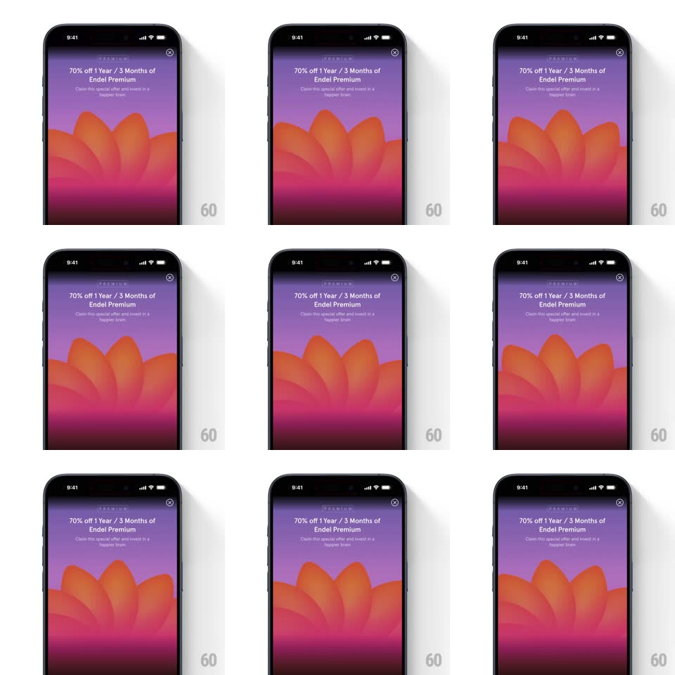

Media
Frame-by-frame

Rebuild this interaction 1:1: Endel's premium paywall - behind the "70% off 1 Year / 3 Months of Endel Premium" offer text, a layered illustration of soft flower/petal shapes in orange, red, and magenta over a purple sky slowly rotates, pulses, and drifts, creating a calm ambient loop.

Rebuild this interaction 1:1: Endel's premium paywall - behind the "70% off 1 Year / 3 Months of Endel Premium" offer text, a layered illustration of soft flower/petal shapes in orange, red, and magenta over a purple sky slowly rotates, pulses, and drifts, creating a calm ambient loop. ## Integration Integration: stack-agnostic spec - springs given as stiffness/damping, timed motions as duration + curve; map every value to your framework and animation library of choice. ## Scene Full-bleed paywall: purple-to-magenta gradient sky, layered translucent petal/mound shapes (orange front, deeper red and magenta layers behind) filling the lower half, "PREMIUM" tag and the offer headline with subline at top, close X top-right. ## Motion spec Pattern: slow ambient rotation and pulse of layered illustration. - Each petal layer rotates gently around its own center (rotation +/-3deg, 6-9s per cycle, ease-in-out, layers phase-offset so they never align). - The front layer breathes (scale 1 -> 1.03 -> 1, 7s loop) while rear layers drift horizontally a few pixels (translateX +/-8px, 8s, counter-phase). - The purple sky gradient shifts hue subtly (top color cycles a few degrees, 12s loop). - The text block and close button stay perfectly still - the calm comes from the illustration only. ## Calibration - All motion is slow (6s+) and small (a few degrees, a few pixels) - nothing should feel like it "moved", only that it is alive. - Layers are translucent; overlaps blend into new colors as they drift. ## Reduced motion Static illustration; no rotation, pulse, or gradient shift. ## Don't miss - The layers never sync - constant phase offset keeps the composition from ever repeating. - The offer text is locked in place; readability is never compromised by the motion.